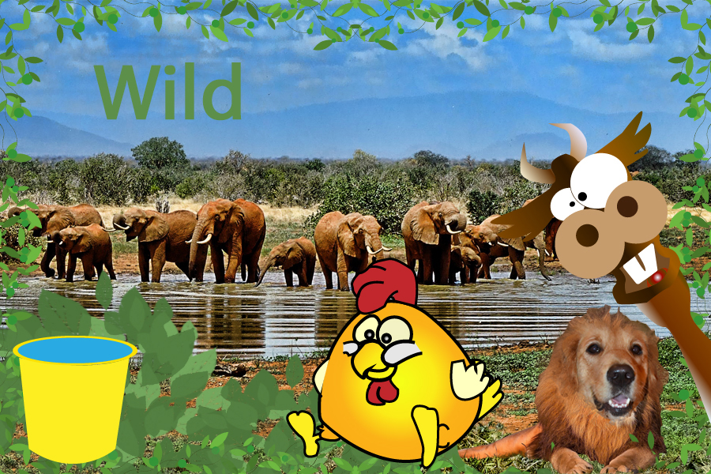

Home | Vector | Print | Pixel | Motion | Contact
After what is widely agreed upon as the only true magnum opus in existence Instead of retiring upon his dynasty of greatness Matthew proceeded to elaborate. While most can merely view his first piece in awe Matthew was able to see beyond it. Using illustrator he was able to take his beyond human talents even further. Casting a larger shadow over the Mona Lisa is Matthew’s second piece “Chien et amis”. This digital masterpiece solved the one issue with Matthew’s original work. Something as god like as a doglion will obviously begin to feel lonely among humans. But with foresight matching Kronos Matthew was able to foresee the doglions loneliness thus providing two elegant and jaw dropping friends. Many feel as though the still image comes to life with the grace and melodic personalities of the newest additions.